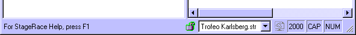

The status bar is standard displayed at the bottom of the work space.
You can toggle the status bar through Status bar
in the View menu.

The status bar consists of the following elements:
(from left to right)
Navigation information that informs about a
menu or
tool bar action that you are about to take;
Indication for
the program mode, displaying a locked red padlock when running in
evaluation mode or an open green padlock when running in registered
mode;